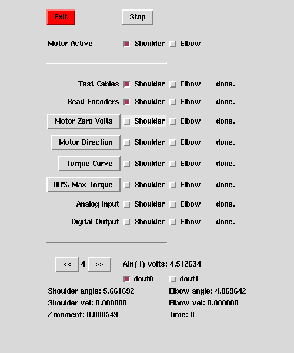

InMotion2 Motor Test
Mon Nov 3 14:51:31 EST 2003
The InMotion2 Motor Test program runs a series of tests on the
shoulder and elbow motors to be used in an InMotion2 robot.
These tests should be run on each new motor before it is connected
to the body of a robot.
The program is called motor_tests , in /opt/imt/robot/crob , and it's written in
Tcl/Tk.
Data Display
The Motor Test program data display screen looks like this:

When you run Motor Test, it automatically loads and starts the
InMotion2 Linux Kernel Module, so there is no "Load" button to press.
The program does not show this display until the kernel is loaded
and ready.
Control Buttons
The two buttons at the top are "Stop," which stops a currently running
test before it's done, and "Exit," which stops a test, unloads the
InMotion2 Kernel Module, and exits from the program. You should see
the Analog Input voltage and Z moment shimmering a bit, because there
is a bit of noise in these signals during normal robot operation.
As always, if you need to stop a test in a hurry, first reach for the
big yellow stop button on the robot control panel, or one of
the other two stop buttons on the cables, don't bother searching for
the stop button on the program with your mouse until you hit the
e-stop.
The next row of the display shows the "Motor Active" check buttons.
These buttons control which motor is getting command voltages. You
may test the motors in any combination, shoulder, elbow, neither, or
both. In most cases, you will be testing either one motor or the
other, not both.
Note that a Tcl/Tk check button may be pressed by clicking on its
label as well as on the small button itself. Tcl buttons, including
check buttons, turn light gray when you mouse over them, letting you
know that they are ready to be clicked. A check button is to the left
of its corresponding label, this is clear when you mouse over it,
as shown in the figure above.
Test Buttons
The large middle section of the display is offset by horizontal lines.
This section has one row of information for each test. Each row has a
check button for the shoulder motor and one for the elbow motor. You
should check each of these when that motor has passed the
corresponding test.
System State indicators
The bottom section of the display has sensor indicators showing
robot system state. This section has the following values:
- AIn (Analog Input) Voltage - a thumb-wheel-style selector allows
you to display one of the eight analog input voltages on the junction box.
- dout (Digital Output) - the two check buttons allow you to
activate any combination of the digital outputs. When inactive, they
send about zero volts, when active, they send about five volts. (This
is the only part of this section that is an actuator, not a sensor.)
- Shoulder and Elbow Angle - these show the motor position in
radians, from 0 to 2 pi.
- Shoulder and Elbow Velocity - these show the motor velocity in
radians per second, from -pi to +pi. Negative values are shown with a
pink background.
- Z moment - this shows the rotation force in Newton-meters.
Negative values are shown with a pink background.
- Time - when tests are running, this ticks seconds down toward
zero.
- Status - when tests are running, this bottom line may show a test
status message. When a test has been run, it may be empty or say:
"test done." (There is no status message in the figure above.)
Motor Tests
The first two tests and the last two test are performed using the
indicators in the bottom section of the data display, but the
middle tests have buttons which run motor control protocols to drive
the motors with different patterns.
Caution: Whenever motors are installed in a robot arm, you must take
care to hold on to the arm when running this test or other robot
control programs. Some of these tests send voltages to the motors
that can cause an arm to swing quickly and with great force, and they
can hurt people or damage other things. The robot and motors
should be safe if you hold on to the arm when you are running the
tests.
The tests are as follows:
- Test Cables - before cables are attached to robot components, they
should be "buzzed" with a continuity tester. When they are known
to have proper continuity without shorts or opens, they may be
attached. The junction box and control panel must be checked
also.
- Read Encoders - turn motor shafts clockwise and counterclockwise by
hand, and note the angles and velocities in the lower section of the
program display. The PLC error indications should not trigger.
- Motor Zero Volts - send zero volts to the motors and plot
encoder values to assure that there is no drift or noise.
This test runs for 60 seconds.
- Motor Direction - spin the motors with low forces to make sure
they spin in the correct direction in response to motor command voltages.
This test runs for 10 seconds, spinning 5 seconds in each direction.
- Torque Curve - set the motor in a torque measurement jig and send
the motor a range of voltages, the program will measure the torques at
each voltage, and generate a table of readings for a torque curve
calculation for bias and gain. This test appends the torque curve
readings to the file torque.dat .
This test runs for 55 seconds, sending the motors voltages of: -1, -2,
-3, -4, -5, 0, 1, 2, 3, 4, 5 volts for five seconds each.
- 80% Max Torque - apply 80% of maximum torque to the motor to find
and report the average measured torque. This test runs for 125 seconds,
sending the motor -4 volts for one minute, waiting 5 seconds, and then
sending 4 volts for one minute. The voltages ramp up and down for one
second at beginning and end, to keep the motors from jerking during this test.
- Analog Input - check that the eight analog inputs on the junction
box are wired and working correctly. This may be done using a digital
output or a power supply as a source.
- Digital Output - check that the two digital outputs on the junction
box are wired and working correctly. This may be done using a
an analog input or a voltmeter as a sink.